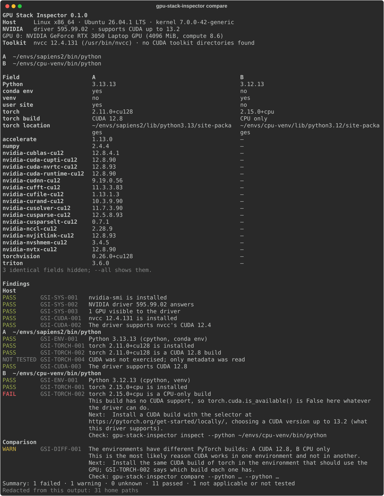

nvidia-smi shows your GPU, yet torch.cuda.is_available() is True in one
environment and False in another. GPU Stack Inspector inspects both from one command, shows what
differs, and says which difference matters.

Install
uv tool install git+https://github.com/BhuwanJoshi-01/gpu-stack-inspector
gpu-stack-inspector compare --python ~/envs/works/bin/python --python ~/envs/broken/bin/pythonNeeds Python 3.11 or newer; the environments it inspects can be Python 3.8 or newer.
What it promises
- Read-only. Nothing is installed or changed; no
sudo; no network access. - Your environments stay untouched. Metadata is read from disk. torch is only imported with
probe --runtime, which runs a 16-element operation on the GPU. - Unknown is not a pass. A check that could not run never shows as green.
- Shareable reports. Paths, names, secrets and tokens are redacted before anything is printed, and each report says what was removed.